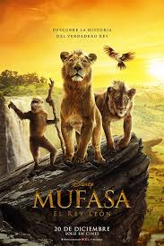

Mejores películas en cartelera
La semilla de la higuera sagrada
- Título original: The Seed of the Sacred Figaka
- Año: 2024
- Duración:168 min
- País: Alemania
- Dirección: Mohammad Rasoulof
- Guion: Mohammad Rasoulof
Sinopsis:Iman es un juez de instrucción que trabaja en Teherán en mitad de un ambiente cargado de inestabilidad política y social.
Iman se ve inmerso en un clima de paranoia, ya que la tensión de los disturbios callejeros comienza a penetrar en su vida personal.
La desaparición repentina de su pistola lo llena de incertidumbre, y en su confusión, empieza a sospechar de las personas más cercanas a él: su esposa y sus dos hijas.
Con el miedo constante a ser traicionado, Iman empieza a tomar decisiones impulsivas que amenazan la estabilidad de su hogar.
Crítica: Es una película que te mantiene en tensión y te hace reflexionar acerca de lo que vive la gente en Palestina, viviendo entre la guerra y la resistencia.
Desde mi punto de vista, esta película tiene muchas emociones dentro de ella, su historia tiene muchos momentos bastante conmovedores y las actuaciones de los actores principales son muy buenas, por lo que era difícil no conectarse con ellos.
Aun así, hay muchos detalles que se pudieron mejorar. Por ejemplo, el ritmo de la película y el desarrollo de los personajes secundarios que en general no hacen a la historia, también podrían haber intensificado el contexto de el mismo conflicto israelí para que no parezca de primer plano, como parece en la película.

La infiltrada
- Título original:La infiltrada
- Año:2024
- Duración:118 min
- País:España
- Dirección:Arantxa Echevarria
- Guion:Arantxa Echevarria, Amèlia Mora.
Sinopsis:Basada en la historia real de Aranzazu Berradre Marín, pseudónimo con el que se infiltró una agente de la Policía nacional en la banda terrorista ETA, durante 8 años.
Cuando contaba apenas 20 años, la joven consiguió adentrarse en la izquierda abertzale, siendo la única mujer que convivió en un piso con dirigentes de ETA.
Durante su infiltración se vio obligada a cortar totalmente lazos familiares, todo para poder desarticular el comando Donosti en un momento crucial en el que la banda declaraba falsamente estar en tregua.
Es la historia de una mujer valiente, que cambió su vida para intentar salvar la de otros.
Crítica:La infiltrada es una película con una trama emocionante y una protagonista fuerte, que ofrece una visión interesante sobre el dilema de la venganza y la justicia.
Sin embargo, creo que podría haber abordado algunos de los temas que plantea de manera más profunda, como la radicalización y la moralidad de las decisiones extremas.
A pesar de algunos altibajos en el desarrollo de personajes y giros sorprendentemente predecibles, la película todavía es un thriller tenso y valioso que mantiene a la audiencia cautivada de principio a fin.

Mejores películas para niños
Mufasa
- Título original: Mufasa: el rey león
- Año: 2024
- Duración:118 min
- País: Estados Unidos
- Dirección:Barry Jenkins
- Guion: Jeff Nathanson
Sinopsis:En "Mufasa: El Rey León", Rafiki cuenta la leyenda de Mufasa a la joven cachorra Kiara, hija de Simba y Nala, junto a Timón y Pumba haciendo de las suyas.
Contada en flashbacks, la historia nos presenta a Mufasa como un cachorro huérfano, perdido y solitario, hasta que conoce a un simpático leoncito llamado Taka, el heredero de un linaje real.
Este encuentro fortuito desencadenará un extenso viaje de un extraordinario grupo de inadaptados en busca de su destino, en el que sus vínculos se pondrán a prueba mientras luchan unidos para escapar de un amenazador y letal enemigo.
Crítica:Mufasa: El Rey León es una película bonita de ver, con una historia que le da más fondo al personaje de Mufasa. Pero no es nada demasiado nuevo ni sorprendente si ya conoces la historia original.
Aun así, si te encanta El Rey León y quieres saber más sobre su rey, es una película que vale la pena ver.

Vaiana 2
- Título original: Moana 2
- Año: 2024
- Duración:100 min
- País: Estados Unidos
- Dirección:David G. Derrick Jr.
- Guion:David G. Derrick Jr.
Sinopsis:En Moana 2, Maui y Moana se reúnen nuevamente tres años después para un nuevo y extenso viaje, en el que los acompaña una tripulación de inusuales marineros.
Tras recibir una inesperada llamada de sus ancestros, Moana debe viajar por los mares de Oceanía hacia aguas peligrosas, olvidadas durante mucho tiempo.
Crítica:Vaiana 2 es una película muy entretenida con una protagonista valiente que busca salvar su isla. Las canciones son geniales y la animación es impresionante.
El personaje de Maui a veces parece un poco pesado, pero la película tiene un buen mensaje sobre la autodescubrimiento y la aventura. ¡Es una película que vale la pena ver!

Próximos estrenos
- The brutalist (24 de enero de 2025)
- A complete unknown (28 de enero de 2025)
- Capitán América: Brave New World (14 de febrero de 2025)
- Como hacerse millonario antesde que muera la abuela (24 de enero de 2025)
- We have a dream (24 de enero de 2025)
- No hay amor perdido (7 de febrero de 2025)


html-ejerc7-pelis by Carla Alonso is licensed under Creative Commons Attribution-NonCommercial-NoDerivatives 4.0 International